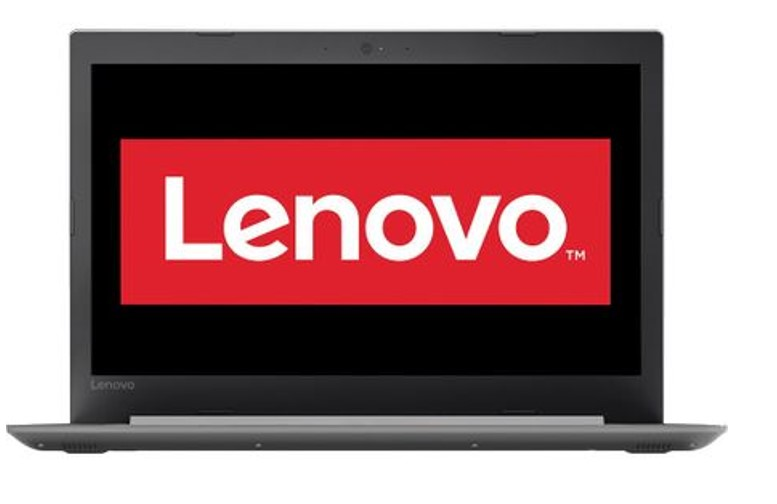
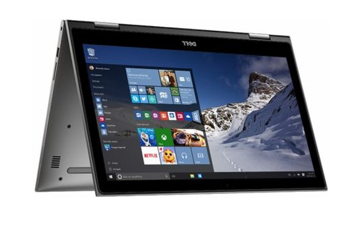

Un laptop nu este doar o bucata de electronica - este si o investitie. De aceea am conceput Ideapad 330 cu un finisaj special de protectie pentru a va proteja impotriva uzurii, precum si cu detalii din cauciuc pentru a maximiza ventilatia si a prelungi durata de viata a componentelor.
Descriere hp_pavilion

Laptop 2 in 1 Dell Inspiron 5378 cu procesor Intel® Core™ i3-7130U 2.70 GHz, Kaby Lake, 13.3", Full HD, IPS, Touch, 4GB, 256GB SSD, Intel® HD Graphics 620, Microsoft Windows 10, Gray Noul laptop 2 in 1 Dell seria 5000 Ne place munca ta. De aceea am creat linia Inspiron. Sunt elegante, versatile si ambalate cu potential.
Cu oricare ZenBook, confortul dvs. este una dintre prioritatile noastre de top, ZenBook S surpinde cu balama exclusiva ErgoLift, o capodopera tehnica proiectata pentru a inclina automat tastatura in cea mai confortabila pozitie de scriere. Dar asta nu este totul: inclinarea atenta imbunatatita imbunatateste performantele de racire si audio.